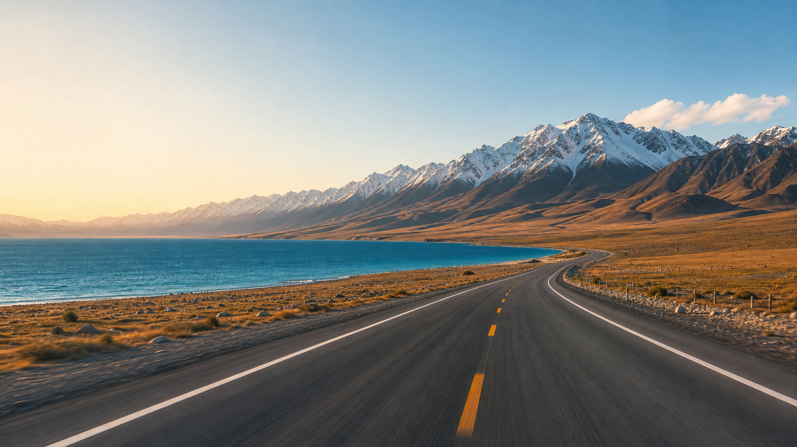

✦ 31 条视频 · 24 个免费点 · 13 地天气
新疆自驾视频库
新疆自驾视频库
路线片场
首页先回答“今天看什么、去哪一段、是否在 2h 内”，再把视频、地图、天气、免费景点串成一条可浏览的旅程。
25全部在 2h 内
3部分超 2h
3离路 2h
5参考视频
Featured Route
先看最有决策价值的 6 条
那拉提周边 5赛里木湖周边 6喀纳斯/禾木周边 7完全 0 门票 15
Day-by-Day
每天都有一个观看入口
Live Layer
天气变成行程风险面板
Library